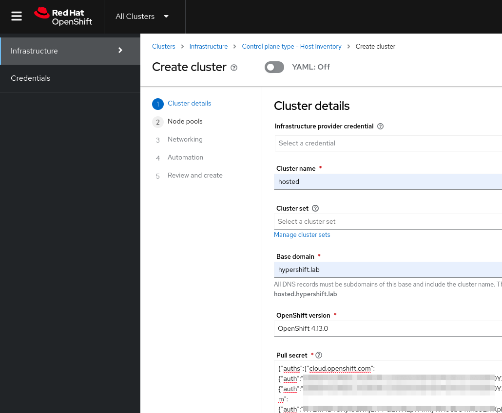
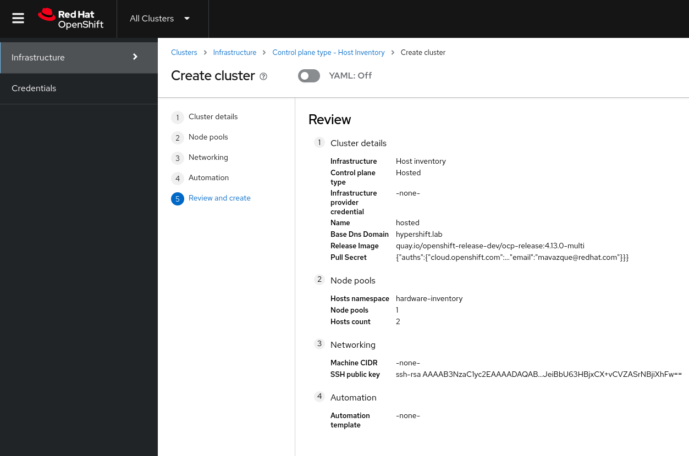

Hosted Cluster Deployment
The creation of the Hosted Cluster can be done by leveraging the Hosted Control Planes API resources such as HostedCluster and NodePool, in this case we will be using the WebUI. You can find the required yaml files to run this same deployment here (you must change the pull secret content if you want to use it).
Creating a Hosted Cluster
-
Access the OpenShift Console and login with the OpenShift admin credentials you got in the lab’s email.
-
On the top bar, next to the Red Hat OpenShift logo, make sure
All Clustersis selected. This will show us theMultiCloudconsole. -
Once you’re in, click on
Infrastructure→Clusters. You will see a screen like the one below.
-
Click on
Create cluster→Host inventory→Hosted control plane. -
You will get to a wizard that will guide you through the creation of the Hosted Cluster. Make sure you enter the following details.
-
Infrastructure provider credential: Leave it empty -
Cluster name: hosted -
Cluster set: Leave it empty -
Base domain: hypershift.lab -
OpenShift Version: OpenShift 4.13.0 -
Pull secret: Put the output given by this commandoc --kubeconfig ~/hypershift-lab/mgmt-kubeconfig -n openshift-config extract secret/pull-secret --to=-
-
-
In the next screen enter the following details.
-
Namespace: hardware-inventory -
Number of hosts: 2
-
-
Following screen will show the networking settings, these are the settings you should use.
-
API server publishing strategy: LoadBalancer -
Use advanced networking: Unchecked -
Show proxy settings: Unchecked -
SSH public key: Put the output given by this commandoc --kubeconfig ~/hypershift-lab/mgmt-kubeconfig -n hardware-inventory get infraenv/hosted -o jsonpath='{.spec.sshAuthorizedKey}'
-
-
In the Automation screen leave everything empty and click
Next. -
The final screen should look like this.
 -
At this point you can go ahead and click
Create. -
After clicking you will be redirected to the
hostedcluster view.
Monitoring the Hosted Cluster Deployment
In this section we will learn how we can monitor the Hosted Cluster deployment from the WebUI as well as from the CLI.
Monitoring the Hosted Cluster Deployment via the WebUI
-
You should be in the
hostedcluster view already from the previous step. If you’re not you can get back to it by opening the OpenShift Console. Making sureAll Clustersis selected and clicking on the cluster namedhosted. -
You should see an screen like the one below where we see that most of the control plane components are ready.
It can take up to 5 minutes for the conditions to look like in the screenshot below. -
In this same view, we can click on the
NodePoolto see the nodes deployment status. We can see at this point two bare metal hosts from the inventory (hosted-worker0 and hosted-worker2) being installed.The bare metal hosts selected may be different for your cluster. 
-
After a few moments (around 10 minutes), we will see that the nodes have been installed.
-
Additionally, we can click on
Nodesin the hosted cluster view and we will see that the two nodes joined the Hosted Cluster.
-
At this point the Hosted Cluster is almost installed. In the next section we will see how to monitor the deployment from the CLI.
Monitoring the Hosted Cluster Deployment via the CLI
| Below commands must be executed from the workstation host if not specified otherwise. |
-
Check the
HostedClusterfor the hosted cluster, you can see it says the hosted control plane is ready but the progress isPartial. This is expected since the Hosted Cluster deployment is not finished yet.oc --kubeconfig ~/hypershift-lab/mgmt-kubeconfig -n hosted get hostedcluster hostedNAME VERSION KUBECONFIG PROGRESS AVAILABLE PROGRESSING MESSAGE hosted hosted-admin-kubeconfig Partial True False The hosted control plane is available -
We can check the control plane pods.
oc --kubeconfig ~/hypershift-lab/mgmt-kubeconfig -n hosted-hosted get podsNAME READY STATUS RESTARTS AGE capi-provider-dcb6ffdc8-vllvw 1/1 Running 0 25m catalog-operator-57df8c49d4-848d2 2/2 Running 0 23m certified-operators-catalog-67fb94bd67-7bprn 1/1 Running 0 23m cluster-api-5b57c6c54b-mwx2s 1/1 Running 0 25m cluster-autoscaler-5d95c5b57d-zlpb5 1/1 Running 0 24m cluster-image-registry-operator-64dc684b9-p7wzn 2/2 Running 0 23m cluster-network-operator-994b465c7-fp445 1/1 Running 0 23m cluster-node-tuning-operator-798b6fcc78-jb2m8 1/1 Running 0 23m cluster-policy-controller-6c7fbc7884-j7q9q 1/1 Running 0 23m cluster-storage-operator-688cc9b879-5blvb 1/1 Running 0 23m cluster-version-operator-56f58c6c94-5xtww 1/1 Running 0 23m community-operators-catalog-7cc759bcd5-hzjmq 1/1 Running 0 23m control-plane-operator-7df9688864-xcsc6 1/1 Running 0 25m csi-snapshot-controller-57667cc9bc-lnz62 1/1 Running 0 23m csi-snapshot-controller-operator-5bf7cc7649-lstlt 1/1 Running 0 23m csi-snapshot-webhook-8988984d9-vcfh2 1/1 Running 0 23m dns-operator-d6fdbc7c5-f4dcg 1/1 Running 0 23m etcd-0 2/2 Running 0 24m hosted-cluster-config-operator-84d969fd86-t9xbv 1/1 Running 0 23m ignition-server-545f9c6b7d-sncvn 1/1 Running 0 24m ingress-operator-74bcd8b697-js8ng 2/2 Running 0 23m konnectivity-agent-c9dc84589-zsfgs 1/1 Running 0 24m konnectivity-server-86966d7fc8-ndm69 1/1 Running 0 24m kube-apiserver-dd6c5456c-v8r4c 3/3 Running 0 24m kube-controller-manager-cc9594b49-bf2gc 1/1 Running 0 11m kube-scheduler-57b7b5d76c-5d4mv 1/1 Running 0 23m machine-approver-55f5ffb68-gqtsl 1/1 Running 0 24m multus-admission-controller-5c7d4dc7c4-gk87m 2/2 Running 0 14m oauth-openshift-6b9c485bf9-prl42 2/2 Running 0 23m olm-operator-cb9686dcc-5hmsp 2/2 Running 0 23m openshift-apiserver-69c8f48954-xx9g9 3/3 Running 0 11m openshift-controller-manager-77cc954585-8gw24 1/1 Running 0 23m openshift-oauth-apiserver-5759955b88-4zmdf 2/2 Running 0 23m openshift-route-controller-manager-9f9df9cd7-24tfz 1/1 Running 0 23m ovnkube-master-0 7/7 Running 0 14m packageserver-d789d6659-49xwb 2/2 Running 0 23m redhat-marketplace-catalog-6dbfc579f6-m82x5 1/1 Running 0 23m redhat-operators-catalog-7bb4c764b9-ks8n6 1/1 Running 0 23m -
The NodePool will tell us the state of the nodes joining the Hosted Cluster:
oc --kubeconfig ~/hypershift-lab/mgmt-kubeconfig -n hosted get nodepool nodepool-hosted-1At this point the nodes are still being deployed as you can see. NAME CLUSTER DESIRED NODES CURRENT NODES AUTOSCALING AUTOREPAIR VERSION UPDATINGVERSION UPDATINGCONFIG MESSAGE nodepool-hosted-1 hosted 2 0 False False 4.13.0 Scaling up MachineSet to 2 replicas (actual 0) -
Since the nodes are being deployed we can check the status of the agents:
oc --kubeconfig ~/hypershift-lab/mgmt-kubeconfig -n hardware-inventory get agentsWe can see at this point two agents from the inventory being rebooted as part of the installation process. NAME CLUSTER APPROVED ROLE STAGE aaaaaaaa-aaaa-aaaa-aaaa-aaaaaaaa0201 true auto-assign aaaaaaaa-aaaa-aaaa-aaaa-aaaaaaaa0202 hosted true worker Rebooting aaaaaaaa-aaaa-aaaa-aaaa-aaaaaaaa0203 hosted true worker Rebooting -
After a few moments (up to 10 minutes), the agents will be fully installed:
oc --kubeconfig ~/hypershift-lab/mgmt-kubeconfig -n hardware-inventory get agentsNAME CLUSTER APPROVED ROLE STAGE aaaaaaaa-aaaa-aaaa-aaaa-aaaaaaaa0201 true auto-assign aaaaaaaa-aaaa-aaaa-aaaa-aaaaaaaa0202 hosted true worker Done aaaaaaaa-aaaa-aaaa-aaaa-aaaaaaaa0203 hosted true worker Done -
And the NodePool will reflect that as well.
oc --kubeconfig ~/hypershift-lab/mgmt-kubeconfig -n hosted get nodepool nodepool-hosted-1NAME CLUSTER DESIRED NODES CURRENT NODES AUTOSCALING AUTOREPAIR VERSION UPDATINGVERSION UPDATINGCONFIG MESSAGE nodepool-hosted-1 hosted 2 2 False False 4.13.0
At this point the Hosted Cluster deployment is not finished yet, since we need to fix Ingress for the cluster to be fully deployed. We will do that in the next section where we will learn how to access the Hosted Cluster.